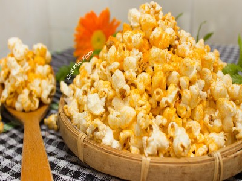

|  |
Food's name: Popcorn▸ Ingredients:
▸ Time to prepare: 20 minutes ▸ Approx quantity: 1 medium bowl |
▸ Detailed recipe: | |
Step 1: Make popcorn:
- Put 3 tablespoons of cooking oil in a pot or pan with a lid. Use a pot or pan
with a lid that has holes in it to let the steam out to help keep the popcorn
from getting chewy.
- Turn the heat to medium and drop 2 corn kernels into the pot, until the 2
corn kernels expand, the oil is hot enough, add the rest of the corn.
- After adding the corn kernels, cover the pot or pan.
- Gently shake the pot or pan so that the popcorn doesn't burn.
- When the corn is fully expanded, turn off the heat. Cover the pot for a while
to let the last corn kernels bloom, then open the lid to avoid steaming to soften
the corn.
- Pour into a large bowl and season to taste sweet or savory.
|
Bước 2: Make butter popcorn:
- Put the pot on the stove, lower the heat, add the sugar and about 5ml of water,
stir until the sugar has melted, and turn the color of cockroach wings.
- Then add the butter, add a little water and stir well until the butter is melted,
the sugar color, the butter color is the color of cockroach wings.
- Lower the heat to low and then add the popcorn, stirring for 3-4 minutes to let
the corn absorb the butter-sugar mixture.
|
=> Popcorn will be the best snack choice when watching a movie.
▸ Calories and related information: